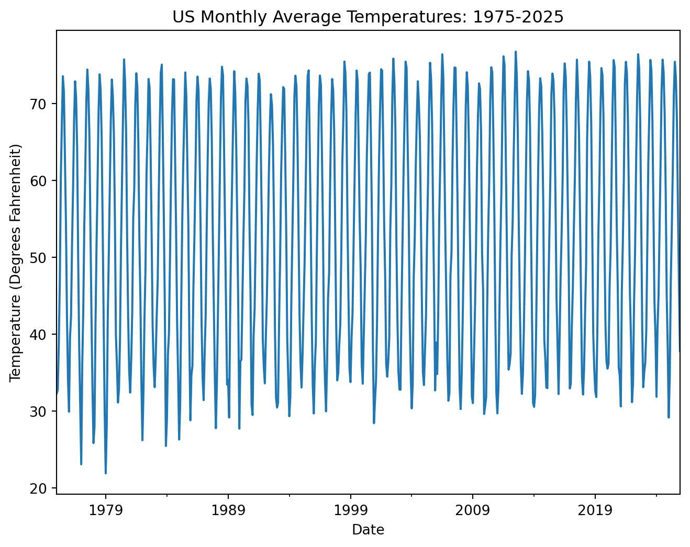
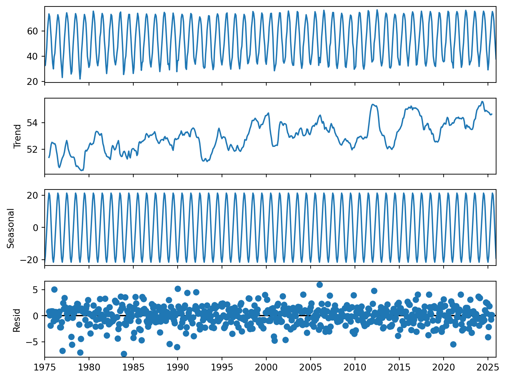
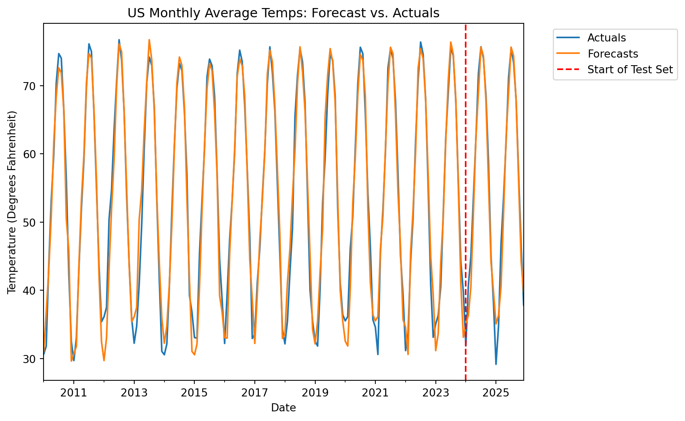

Understanding seasonal naive forecasts and how to build them in Python
Published
November 6, 2026
As described in our article on simple naive forecasting models, one of the major limitations of a simple naive forecasting model is that it cannot account for seasonality in time series data.
As a reminder, seasonal variations refer to recurring fluctuations that happen at consistent frequencies. For more information about seasonality and other time series structures, feel free to check our article on time series structures here.
In this article, we will walk through how you can build upon a simple naive forecast by accounting for seasonal variations in your time series data. This one step alone can often take what may seem like an overly simplistic model and turn it into a very competitive baseline to compare more advanced time series models against.
The Basic Idea
If you understand how a simple naive forecast works, it is easy to grasp how a seasonal naive forecast works. You might recall that with a simple naive forecast, you are essentially just shifting your time series 1 step forward. In other words, what happens at t becomes the forecast for t+1. The most recent past value becomes the future projected value.
A seasonal naive forecasting model uses that same principle from a simple naive model - the past values become the forecast; however, rather than simply taking the most recent value (shifting 1 instance), we shift according to the seasonal duration. For monthly data with a yearly cycle, we shift by 12. For daily data with a weekly cycle, we shift by 7. For quarterly data with a yearly cycle, we shift by 4.
Let’s use yearly seasonality as an illustration. Imagine you are a data analyst for a large online toy retailer. You are attempting to forecast toy sales for December of this year - the peak month. A simple naive forecast would use November’s toy sales value (or whatever the most recent available value was) to predict December’s forecasted toy sales. A seasonal naive forecast, on the other hand, would use last December’s toy sales to predict next December’s toy sales. So, rather than shifting by 1, you’re shifting by 12. The same concept would extend to other forms of seasonality (weekly, quarterly, etc.).
A Python Example
Having discussed the general concept behind a seasonal naive forecast, let’s walk through a simple implementation in Python. We will use pandas’ .shift() method again. This time, however, we will shift by the seasonal period, rather than just shifting by 1 instance. More information about pandas’ .shift() method is available here.
For this example, we will be using a dataset that tracks monthly average US temperatures (in degrees Fahrenheit) from 1975 to 2025. This data was retrieved from the NCEI Climate at a Glance National Time Series site here.
#Necessary importsimport pandas as pdimport matplotlib.pyplot as pltfrom statsmodels.tsa.seasonal import seasonal_decomposefrom sklearn.model_selection import train_test_split#Load US average temp data from 1975-2025data = pd.read_csv('us_temps_1975-2025.csv')#Prepare datetime indexdata['date'] = pd.to_datetime(data['date'].astype(str), format='%Y%m')data = data.set_index('date').asfreq('MS') #Set index and ensure frequency is specified as month startdata.head(5) #Check the first five rows
temp
date
1975-01-01
32.34
1975-02-01
32.76
1975-03-01
38.70
1975-04-01
46.83
1975-05-01
60.35
Let’s take a moment to visualize our data. In a real-world project, you would go a lot deeper in the exploration stage, but for our purposes we will just use a simple line graph and a basic time series decomposition using statsmodels’ seasonal_decompose function.
#Build a basic line plot of the datadata.plot(figsize=(8, 6), legend=False)plt.title('US Monthly Average Temperatures: 1975-2025')plt.ylabel('Temperature (Degrees Fahrenheit)')plt.xlabel('Date')plt.show();

The fluctuations appear to be seasonal, and there does not appear to be a strong trend present from the raw line plot. Let’s proceed with decomposing our time series.
decomp = seasonal_decompose( data, model='additive'#Additive seasonality as we do not have evidence of multiplicative variation)fig = decomp.plot()fig.set_size_inches(8, 6)

Our time series does appear to have a slight upward trend (2nd plot). In other words, recorded US average temperatures increased slightly from 1975 to 2025. For the purposes of this exercise, though, we will ignore that trend structure for now.
The seasonal component (3rd plot) very clearly shows what appears to be strong yearly (12-month) seasonality. This makes intuitive sense as temperatures are highest in summer months and lowest in winter months in the United States.
For our purposes, we have strong evidence that a seasonal naive forecast model may be appropriate for this time series. Let’s set apart a portion of our data as a test set using sklearn’s train_test_split function, being sure the shuffle parameter is set to False. We will reserve 24 months of data for testing purposes.
train, test = train_test_split(data, shuffle=False, test_size=24) #Shuffle set to False since we're working with a time series#Quick gut check of the train and test set sizesprint("Train Set Size:", train.shape[0])print("Test Set Size:", test.shape[0])
Train Set Size: 588
Test Set Size: 24
Okay, now for the fun part. Let’s first generate our fitted values for our training set. We will use .dropna() to drop the null values that result from this shift.
#Generate fitted values by shifting the datafitted_values = train.shift(12).dropna()fitted_values.head()
temp
date
1976-01-01
32.34
1976-02-01
32.76
1976-03-01
38.70
1976-04-01
46.83
1976-05-01
60.35
Now, let’s take the last 12 values of our training set and use them as our forecast for the test set period.
forecast_values = train['temp'].iloc[-12:] #Extract last seasonal periodforecast_values = pd.concat([forecast_values, forecast_values], ignore_index=True) #Repeat the seasonal period twice to match length of test set (24 months)#Note, there are more flexible ways to do this in situations when the test set size is not a multiple of the seasonal period#This method works for the purpose of our illustration hereforecast_values.index = test.index #Change index to match the test set index
We have forecasted for the duration of our test set. Now let’s use visualization to see how well our seasonal naive forecast performed on the test set. Note that we will limit the view to start at 2010 to make it easier to see the seasonal fluctuations and alignment.
#Combine fitted values and forecasted values into one dataframecombined_fitted_forecasts = pd.concat([fitted_values, forecast_values], axis=0)# Add the actual values into the same dataframe for easy visualizationcombined_actual_forecasts = pd.concat([data, combined_fitted_forecasts], axis=1).dropna() #Dropping null values for which there is no forecast#Rename columnscombined_actual_forecasts.columns = ['Actuals', 'Forecasts']#Plot the resultscombined_actual_forecasts['2010-01-01':].plot(figsize=(8, 6), legend=True)plt.axvline(x=test.index[0], c='red', linestyle='--', label='Start of Test Set')plt.legend(bbox_to_anchor=(1.05, 1.0), loc="upper left")plt.title('US Monthly Average Temps: Forecast vs. Actuals')plt.ylabel('Temperature (Degrees Fahrenheit)')plt.xlabel('Date')plt.show();

Based on this visualization alone, we can surmise that our seasonal naive forecasting model does a decent job of capturing the overall structure of the US average temperature data. Both the fitted values and the test-period forecast values show the correct seasonal variation. This suggests that one year’s average temperatures each month are a good indication of the next year’s average temperatures.
In a real-world project, we would now want to compare other types of models such as Exponential Smoothing with Seasonality or SARIMA and use metrics like RMSE or MAE to determine which model is most appropriate. For now though, we have demonstrated that seasonal naive can be a strong baseline forecasting model for time series that have seasonality but little to no trend.
Conclusion
To sum up, a simple naive model is often too simplistic, especially for time series that have seasonal fluctuations. We can easily adjust our approach in Python to account for seasonality in our data. This provides us with a better forecasting model to which more advanced models can be compared. Sometimes, a simple model like seasonal naive can outperform even more sophisticated time series forecasting models. This forecasting model should be one every data professional has in their tool belt.